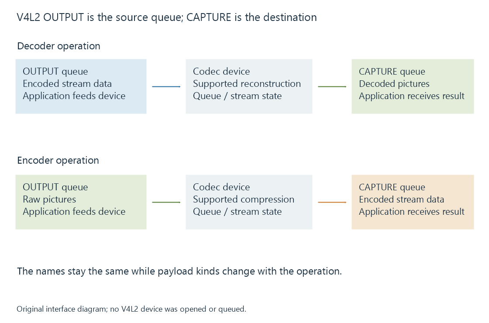

V4L2 memory-to-memory codecs
A V4L2 memory-to-memory codec transforms application-supplied buffers through paired source and destination queues whose formats, ownership and state define the media operation.
A V4L2 memory-to-memory codec receives application-supplied buffers, transforms their media and returns destination buffers. The device interface pairs source and destination queues, with negotiated formats describing the operation.
“Memory-to-memory” describes the data route. The device can use specialized hardware to perform its supported transformation.
OUTPUT is the device’s source queue
V4L2 names these queues from the device interface's perspective:
| Operation | OUTPUT queue | CAPTURE queue |
|---|---|---|
| Decode | Encoded stream data supplied to the device | Decoded pictures returned from it |
| Encode | Raw pictures supplied to the device | Encoded stream data returned from it |
For decoding, therefore, the movie's compressed input enters OUTPUT. CAPTURE is not necessarily a camera: it is where the application receives the result of this memory-to-memory operation.

The multi-planar variants use the same source/destination distinction with their applicable buffer structures.
Negotiate each queue’s format
A stateful decoder accepts supported encoded stream data and manages its decoding state through the driver/device path. The application negotiates encoded OUTPUT and suitable decoded CAPTURE formats.
The selected encoded configuration can constrain the possible decoded layouts and dimensions. A capability result for one coded format should not be transferred to every other format on the device.
The driver can learn actual picture information from the bitstream and report a source-change event. The application then establishes the appropriate CAPTURE layout and buffers for the changed picture configuration.
This is why a placeholder size set before the stream's headers arrive is not always the final output-surface requirement.
Queueing transfers ownership
The application prepares a buffer and queues it. It then follows the interface's completion/dequeue relationship before treating that buffer as available again.
An original decoder trace distinguishes source and destination:
Queue encoded buffer E0 on OUTPUT
Device consumes E0 under its stream/decoding state
Return E0 to the application
Decoded picture P0 becomes available on CAPTURE
Application passes P0 to its next consumer
Return P0 for reuse after the required consumer/reference use
The trace is conceptual, not a required one-input/one-output ordering. A decoder can retain picture dependencies, buffer several inputs and reorder output for presentation under its documented stateful contract.
Returning an encoded source buffer proves that buffer's relevant use can end. It does not universally prove every resulting decoded picture has already been consumed downstream.
Changes and end-of-stream have their own state
A new picture configuration can require CAPTURE queue/resource changes while the encoded-stream side has its own continuing state. Drain handling likewise obtains delayed output under the device's specified end behavior.
Closing input immediately after the last bytes can lose the distinction between input completion and final decoded output. The application follows the driver's supported state machine.
For an Emby deployment on embedded Linux, the usable route needs an application integration for the exposed interface, formats and device. A kernel codec device existing does not identify which interface a particular server build actually uses.
Stateless decoding describes another V4L2 contract with explicit application-maintained picture state.
See Also
- V4L2 stateless decoding and the Request API
- DRM PRIME and DMA-BUF frame sharing
- Hardware decoding and software decoding
- Hardware encoding and software encoding
- How media APIs connect applications to hardware